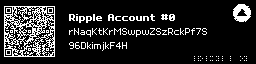

Ripple memo, displayed address and XRPL length prefix · 22 September 2026
Review PR #853. Base: audit/715-p04-final-review @ 92931c91dc77bf2cdf80aaa8938b978add0cfde8; report-generation predecessor: 6a7dc038c00589987758b3a522639d53ce0c606c. The containing final PR head is recorded in the PR body. Candidate firmware source: audit/715-scope-repair @ 614425a2a14d0113de251e7944118e47f31f5265; canonical product release/7.15 @ af979cd5099349ba58ec10d1b7eedeb67662c602 remains separate. Block 5 was not audited by this unit.
Main-worktree master template SHA256 at pre-review: dc484ea3bb7810b410c43830c307f032ad19276f81c7c6c123c407405d4b27e8. Its added Block 00a progress note does not change the numbered audit form used here. Historical counts use git show --format= --numstat --no-renames COMMIT_SHA; PR counts use immutable git diff --numstat 92931c91dc77bf2cdf80aaa8938b978add0cfde8..6a7dc038c00589987758b3a522639d53ce0c606c. The containing final head must preserve the same file inventory and counts. Historical counts include documentation, tests and submodule pointer lines; repeated edits can overlap and are not a net product diff. Binary artifacts appear as -.
| File | Added | Deleted | Meaning |
|---|---|---|---|
| docs/release/audit-units/P06-audit-report-20260922.html | +18 | -0 | Audit report/evidence; no firmware behavior |
| docs/release/audit-units/P06-audit-report-20260922.pdf | - | - | Audit report/evidence; no firmware behavior |
| docs/release/audit-units/P06-block-scope-20260922.md | +138 | -0 | Audit report/evidence; no firmware behavior |
| docs/release/audit-units/P06-ripple-show-address-20260922.png | - | - | Audit report/evidence; no firmware behavior |
| Submodule | Commit |
|---|---|
| code-signing-keys | a6470bd8598e5e9a7bfc38bf139a5e5a616f05ec |
| deps/crypto/trezor-firmware | 8a392f70a5d5575ece3dfb35f115d4a4b27f497c |
| deps/device-protocol | 27d3fa1f6215139cde6411f9a2882f36bb373fc9 |
| deps/googletest | 7888184f28509dba839e3683409443e0b5bb8948 |
| deps/python-keepkey | b76ee610dd18934ee3aeeb36cfc541e8799eb46d |
| deps/qrenc/QR-Code-generator | 6dfbfdad5d9303ed190d1c3cb7bec34b565b6ce8 |
| deps/sca-hardening/SecAESSTM32 | 71d356a1141624994cf613bd2d2583892e8e6d5a |
| Commit | Change | Files | Added | Deleted |
|---|---|---|---|---|
| 7a8a873c366c1c7844b2a414a4fa187c5617cba5 | P06-001 Host memo assertion | 2 | +22 | -1 |
| 885609fbe2ddf66b5224f76880d2c8ff3b90eec1 | P06-002 Displayed address response | 2 | +27 | -4 |
| cecf1ea20239d140cb43dc0629219fd9179ae452 | P06-003 Permanent host assertion | 2 | +16 | -1 |
| 39503dacf595821b2b8a1c65e3f44fa9b6352a88 | P06-004 Memo length boundary | 3 | +37 | -1 |
7a8a873c366c1c7844b2a414a4fa187c5617cba5The Ripple memo host assertion was unconditionally skipped under a stale “no memo” assumption. The Python pin removed that skip while retaining the full-feature and 7.15.0 gates. Its historical pointer has since been superseded; the current b76ee610d pin still contains the memo/no-memo assertions. The earlier full host JUnit and an owned candidate emulator run pass the test; Bitcoin-only skips Ripple by policy.
| File | Added | Deleted |
|---|---|---|
| deps/python-keepkey | +1 | -1 |
| docs/release/audit-units/P06-001-ripple-host-coverage.md | +21 | -0 |
885609fbe2ddf66b5224f76880d2c8ff3b90eec1DebugLink screenshot requests could reuse the response arena while address confirmation was pending, leaving the returned RippleAddress empty. The handler now keeps the derived address in a local buffer and writes the shared response after confirmation; cancellation clears the node. An owned pinned emulator screenshot run passes the current address assertion and produced the screen in this report. Physical OLED remains a release gate.
| File | Added | Deleted |
|---|---|---|
| docs/release/audit-units/P06-002-ripple-display-response.md | +23 | -0 |
| lib/firmware/fsm_msg_ripple.h | +4 | -4 |
cecf1ea20239d140cb43dc0629219fd9179ae452The displayed-address host test previously tolerated an empty return value. Its pinned update asserted the known public address for the fixed firmware. The current canonical Python pin retains the assertion for 7.14.2 and later; an owned screenshot run and earlier full CI host JUnit execute and pass it. The historical submodule pointer is superseded.
| File | Added | Deleted |
|---|---|---|
| deps/python-keepkey | +1 | -1 |
| docs/release/audit-units/P06-003-ripple-display-test.md | +15 | -0 |
39503dacf595821b2b8a1c65e3f44fa9b6352a88The serializer used two bytes for a 192-byte memo length, shifting signed XRPL transaction bytes. It now uses one byte through 192 and two from 193. Native vectors cover 191, 192, 193 and 199; the full candidate xunit log executes and passes the boundary. The current memo field can reach 192; Bitcoin-only excludes Ripple.
| File | Added | Deleted |
|---|---|---|
| docs/release/audit-units/P06-004-ripple-length-prefix.md | +19 | -0 |
| lib/firmware/ripple.c | +1 | -1 |
| unittests/firmware/ripple.cpp | +17 | -0 |
| Commit | Change | Files | Added | Deleted |
|---|---|---|---|---|
| 6e79e57b7 | Later Ripple amount bound | 12 | +235 | -8 |
6e79e57b7A subsequent release-audit commit raised the Ripple amount serializer bound to the protocol maximum and added a native regression. It changes the same Ripple source file but leaves the 192-byte length condition and displayed-address response ordering intact; the full candidate suite executes the added amount test.
| File | Added | Deleted |
|---|---|---|
| include/keepkey/firmware/fsm.h | +1 | -0 |
| include/keepkey/firmware/home_sm.h | +2 | -0 |
| include/keepkey/firmware/ripple.h | +8 | -2 |
| lib/board/confirm_sm.c | +5 | -1 |
| lib/firmware/fsm.c | +20 | -0 |
| lib/firmware/home_sm.c | +37 | -1 |
| lib/firmware/mayachain.c | +8 | -1 |
| lib/firmware/ripple.c | +1 | -1 |
| lib/firmware/storage.c | +8 | -2 |
| unittests/firmware/fsm.cpp | +119 | -0 |
| unittests/firmware/mayachain.cpp | +6 | -0 |
| unittests/firmware/ripple.cpp | +20 | -0 |
fsm_msgRippleGetAddress holds the derived public address in local storage through confirmation, then fills the shared response. The current Python test asserts that returned address when display is requested; the current memo test requires full 7.15, checks the Memos tail and a plain send without Memos. ripple_serializeVarint uses <= 192. The XRPL Binary Format specifies one prefix byte for 0–192 and two for 193–12480.
P06-F001 — accepted scope limit / follow-up: the generic helper uses < 918744 where the XRPL maximum is inclusive, and its debug assertion rejects an exactly three-byte remaining buffer. No current 7.15 Ripple call site reaches that length: memo content is at most 199 bytes; address, public key and signature are shorter. This is a concrete broader-helper issue, not a fixed or waived result of P06-004. Physical OLED and full Ripple helper-domain audit remain open follow-up gates. No new defect was identified in the selected reachable P06 behavior.
Owned full candidate emulator image sha256:18f7375986270c6bdcea6155e9fe8382d5a4faca8f0466ff3bf727b759a2e9f3 ran test_ripple_show_address with KEEPKEY_SCREENSHOT=1 and exact selection: 1 passed, 2 deselected, one PNG. JUnit SHA256 3c2897b104ba4d8744379d810bb49114993cdc3a14344c31e6ca39f1bfd3ff4b; visually inspected PNG SHA256 8ab53a8b93f7020b1e14f43a943950f27618e10b2d21a6f3ce4c2404f6802a6d. The same image ran test_sign_with_thorchain_memo: 1 passed, 3 deselected; JUnit SHA256 73d618dfdfe7a2e68d9d0350f9fa9a654525820ac16ed6eabc86b1711d205ff3. Complete local evidence: /private/tmp/kk-fw-715-p06-evidence.
Full candidate make xunit executes five Ripple native cases including Ripple.MemoLengthPrefixBoundary: 573 firmware, 17 board, 18 crypto and 6 Pallas tests passed; log SHA256 5a452156d0b2264f480ac5d640e388e1ea9ab10bf57783751bcde2fbe947459d. Bitcoin-only deliberately excludes Ripple and passed its 131 firmware, 17 board and 18 crypto tests; log SHA256 4509a2ef1d05d5cdfa21401a6350fd562a48b1b6e69be3dcb14f211ee25ff49e.
Earlier firmware-equivalent CI run 34951131013 at 7e091af157131897adc5514de392570c32088946: full host artifact 10390030970 passes Ripple address/display/sign/memo; Bitcoin-only host artifact 10389023825 skips all seven Ripple cases by design. Native artifacts 10388679573/10389512420 and ARM firmware artifacts 10389287571/10388589162. Full ARM job 104322245689 and Bitcoin-only job 104322245632 both passed cross-compile and SRAM budget steps. From CI source to candidate, only CI workflows changed. From owned-image source to review branch, only audit documentation/SOP changed. These are code/test/pin-equivalent results, not exact-head workflow certification.
The PNG below is committed beside this report and was visually inspected. It is emulator evidence of the displayed public address, not a physical OLED sign-off.
